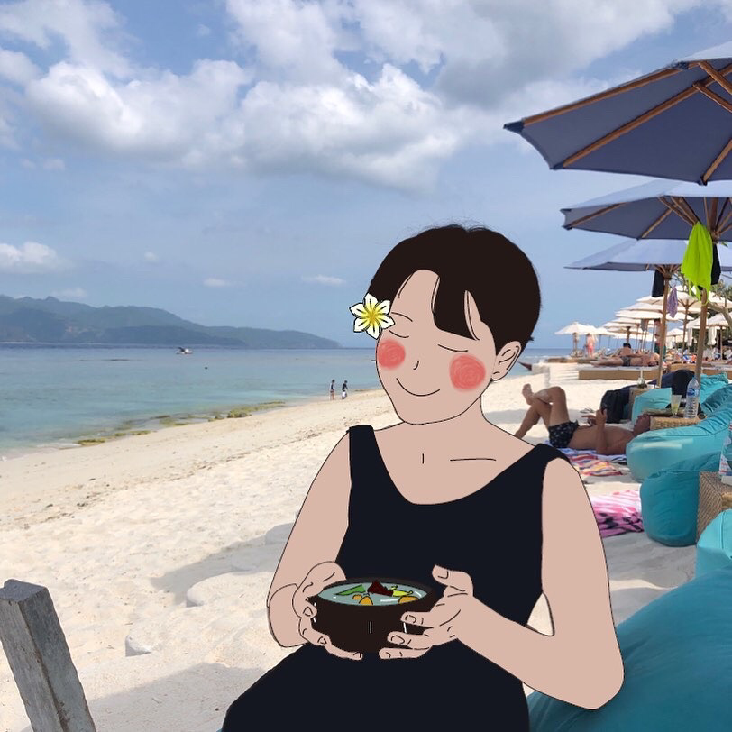

임선영
안녕하세요. 임선영입니다. 필명은 산책자라고 지었습니다. 리베카 솔닛의 ''걷기의 인문학''을 읽다 수집한 단어입니다. 세상을 산책하듯 살고 싶은 마음에서 그런 이름을 지었고, '살아있는 책 읽는 자(혹은 책 쓰는 자)'라는 두 번째 뜻을 마음대로 부여했습니다.
저를 조금 소개해볼까요. 시궁창 같은 심적 상태로 잘나고 싶은 야망을 고민하고요. 하루에도 대여섯 번 생과 사의 경계를 -머릿속에서만- 갈지자로 넘나드는 평범한 한국의 20대고, 건강하게 살고 싶은 마음에 달리고, 아쉬탕가 요가를 수련하다가도 술 취한 어느 날 담배를 뻑뻑 피워대는 현상 유지의 달인입니다. 강남역 이후로 페미니즘 시위를 기웃거리고, 올해 초부터는 동물을 먹지 않습니다. 같이 사는 강아지가 물어뜯은 팬티에 구멍이 나도 그냥 입지만, 책은 한 번에 스무 권씩 사들입니다. 좋은 사람이 되고 싶다는 말을 만트라처럼 외지만 사실 좋은 사람이 뭔지 저도 잘 모르겠습니다.
다만 해하는 행위에서 저를 구하소서. 소비, 음미, 발화, 감상, 닿음, 느낌, 귀 기울임. 이 모든 행위가 그 어떤 것도 해하지 않았으면 좋겠습니다. 어떤 것에는 지구, 마음, 동물, 사람, 그리고 저 스스로가 포함되어 있습니다. '아무것도 해하지 않는 세계'에 살고 싶은 마음을 글로 씁니다.